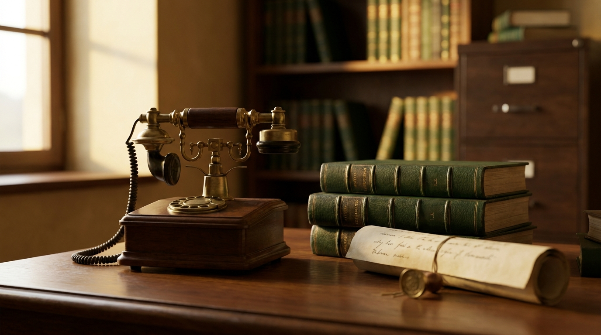

Telemarketing e numero univoco: verso contratti nulli senza identificazione del chiamante
Si discute in sede parlamentare una misura volta a contrastare il telemarketing aggressivo, collegando la validità del contratto telefonico all'identificazione certa del chiamante. La disposizione, allo stato in fase di esame, non è ancora diritto vigente. Vale però la pena capire fin d'ora come si inserirebbe nel quadro consumeristico esistente e quali cautele documentali adottare.

Di cosa si parla
Nel dibattito parlamentare di questi mesi è emersa l'ipotesi di una disciplina che colpisca le pratiche di telemarketing prive di un'identificazione affidabile del numero chiamante. L'obiettivo dichiarato è arginare le chiamate commerciali moleste e i contratti stipulati con consumatori non consapevoli dell'interlocutore.
È doveroso un avvertimento di metodo. Allo stato, secondo le informazioni disponibili (riferimento all'esame in Commissione, giugno 2026), si tratta di una previsione in iter e non di norma in vigore. Gli estremi esatti del provvedimento — articolo, comma e collocazione — andranno verificati alla pubblicazione in Gazzetta Ufficiale. Trattare come già operativa una misura non ancora approvata sarebbe scorretto e fuorviante.
Il quadro regolatorio già esistente
Il contrasto al telemarketing indesiderato non nasce oggi. Esiste già un'architettura di tutele.
Il Registro Pubblico delle Opposizioni (DPR 178/2010 e successive modifiche, da ultimo il DPR 27 gennaio 2022, n. 26, che lo ha esteso anche alle numerazioni mobili) consente all'utente di opporsi alle chiamate commerciali. Sul piano tecnico, l'AGCOM è intervenuta con specifiche delibere in materia di *Calling Line Identification* (CLI) e di filtri anti-*spoofing*, ossia contro la falsificazione del numero chiamante visualizzato dall'utente.
L'idea di un "numero univoco" identificativo si innesta su questo terreno: imporre che la chiamata commerciale sia riconducibile in modo certo all'operatore, così da rendere tracciabile la provenienza e responsabilizzare chi promuove il contatto. È un'evoluzione coerente con le delibere CLI, non un istituto isolato.
Nullità o nullità di protezione? La differenza conta
Qui occorre precisione, perché "nullità" non è un'etichetta neutra.
La nullità ordinaria (art. 1418 c.c.) colpisce il contratto contrario a norme imperative: è rilevabile d'ufficio dal giudice, può essere fatta valere da chiunque vi abbia interesse, è imprescrittibile e non sanabile.
Nel diritto dei consumatori prevale invece, di regola, la nullità di protezione (cfr. art. 36 del Codice del Consumo, d.lgs. 206/2005): opera solo a vantaggio del consumatore, che può anche scegliere di mantenere il contratto se per lui conveniente, mentre il professionista non può invocarla a proprio favore.
È verosimile che una eventuale sanzione di invalidità su contratti da telemarketing si collochi in questa seconda categoria, più aderente alla logica protettiva. Ma è proprio il testo definitivo a dover qualificare il vizio: se la futura norma lo prevedesse espressamente, sarà quella formulazione a fissarne il regime. In assenza, la collocazione consumeristica resta l'interpretazione più probabile, non una certezza.
La distinzione non è teorica. Da essa dipendono chi può agire, entro quali termini e con quali effetti sul rapporto.
Implicazioni pratiche
Per le imprese che operano nel canale telefonico, il messaggio è chiaro a prescindere dall'esito dell'iter: la tracciabilità del contatto e la documentazione del consenso diventano elementi dirimenti. In un eventuale contenzioso, l'onere di provare correttezza del processo e identificabilità del chiamante grava in modo crescente sull'operatore.
Per i consumatori, eventuali nuove tutele si aggiungerebbero a quelle già disponibili (diritto di recesso nei contratti a distanza, opposizione tramite Registro). Il profilo decisivo resta probatorio: conservare traccia della chiamata, del numero e di quanto comunicato.
Cosa fare in concreto
Per le imprese:
- Verificate ora i processi di identificazione del numero chiamante e l'allineamento alle delibere AGCOM su CLI e anti-*spoofing*.
- Archiviate in modo strutturato consensi, registrazioni e log delle chiamate: in giudizio è la documentazione a fare la differenza.
- Monitorate l'iter del provvedimento e predisponete un aggiornamento delle procedure subordinato alla pubblicazione del testo definitivo.
Per i consumatori:
- Iscrivetevi al Registro Pubblico delle Opposizioni e annotate data, numero e contenuto delle chiamate commerciali ricevute.
- Prima di sottoscrivere, chiedete l'identità completa dell'operatore e conservate ogni comunicazione: sono elementi utili in caso di contestazione.
Si segnala, in ogni caso, l'opportunità di non fondare scelte operative su una norma non ancora vigente, ma di tenere monitorata l'evoluzione del testo. La prudenza documentale è già oggi raccomandabile alla luce del quadro consumeristico esistente.
---
Contributo informativo a cura di Tamburro & Partners - Avv. Giuseppe Tamburro. Non costituisce parere legale.
Ogni contratto ha il suo equilibrio.
Se vuoi una revisione delle clausole o una redazione su misura, scrivi allo studio. Ti rispondiamo entro un giorno lavorativo.